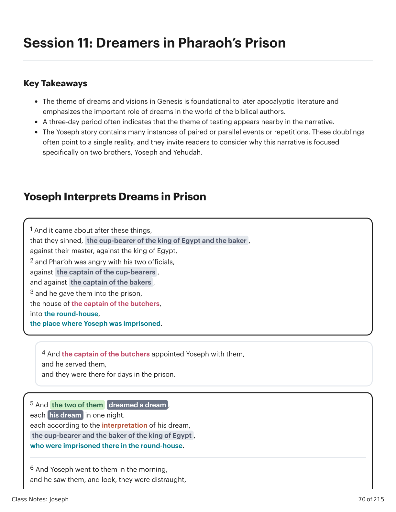
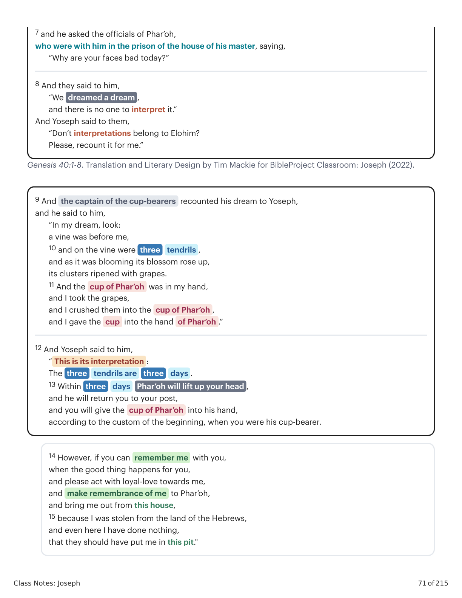
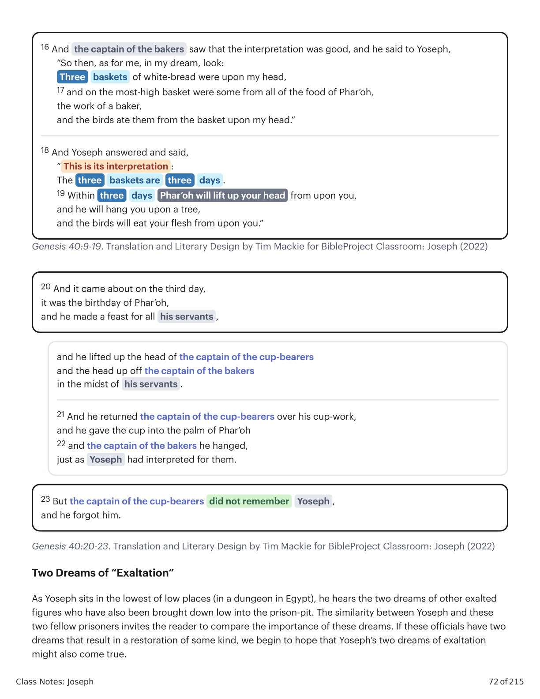

\nClass Notes: Joseph
70 of 215
Session 11: Dreamers in Pharaoh’s Prison
Key Takeaways
The theme of dreams and visions in Genesis is foundational to later apocalyptic literature and
emphasizes the important role of dreams in the world of the biblical authors.
A three-day period often indicates that the theme of testing appears nearby in the narrative.
The Yoseph story contains many instances of paired or parallel events or repetitions. These doublings
often point to a single reality, and they invite readers to consider why this narrative is focused
specifically on two brothers, Yoseph and Yehudah.
Yoseph Interprets Dreams in Prison
1 And it came about after these things,
that they sinned, the cup-bearer of the king of Egypt and the baker ,
against their master, against the king of Egypt,
2 and Phar’oh was angry with his two officials,
against the captain of the cup-bearers ,
and against the captain of the bakers ,
3 and he gave them into the prison,
the house of the captain of the butchers,
into the round-house,
the place where Yoseph was imprisoned.
4 And the captain of the butchers appointed Yoseph with them,
and he served them,
and they were there for days in the prison.
5 And the two of them
dreamed a dream ,
each his dream in one night,
each according to the interpretation of his dream,
the cup-bearer and the baker of the king of Egypt ,
who were imprisoned there in the round-house.
6 And Yoseph went to them in the morning,
and he saw them, and look, they were distraught,\n
\n

Gênesis X:Y. Tradução e Design Literário por Tim Mackie para BibleProject Classroom: José (2021).Genesis X:Y. Translation and Literary Design by Tim Mackie for BibleProject Classroom: Joseph (2021).
\n
\nClass Notes: Joseph
71 of 215
Genesis 40:1-8. Translation and Literary Design by Tim Mackie for BibleProject Classroom: Joseph (2022).
7 and he asked the officials of Phar’oh,
who were with him in the prison of the house of his master, saying,
“Why are your faces bad today?”
8 And they said to him,
“We dreamed a dream ,
and there is no one to interpret it.”
And Yoseph said to them,
“Don’t interpretations belong to Elohim?
Please, recount it for me.”
9 And the captain of the cup-bearers recounted his dream to Yoseph,
and he said to him,
“In my dream, look:
a vine was before me,
10 and on the vine were three
tendrils ,
and as it was blooming its blossom rose up,
its clusters ripened with grapes.
11 And the cup of Phar’oh was in my hand,
and I took the grapes,
and I crushed them into the cup of Phar’oh ,
and I gave the cup into the hand of Phar’oh .”
12 And Yoseph said to him,
“ This is its interpretation :
The three
tendrils are
three
days .
13 Within three
days
Phar’oh will lift up your head ,
and he will return you to your post,
and you will give the cup of Phar’oh into his hand,
according to the custom of the beginning, when you were his cup-bearer.
14 However, if you can remember me with you,
when the good thing happens for you,
and please act with loyal-love towards me,
and make remembrance of me to Phar’oh,
and bring me out from this house,
15 because I was stolen from the land of the Hebrews,
and even here I have done nothing,
that they should have put me in this pit."\n
\n

Gênesis X:Y. Tradução e Design Literário por Tim Mackie para BibleProject Classroom: José (2021).Genesis X:Y. Translation and Literary Design by Tim Mackie for BibleProject Classroom: Joseph (2021).
\n
\nClass Notes: Joseph
72 of 215
Genesis 40:9-19. Translation and Literary Design by Tim Mackie for BibleProject Classroom: Joseph (2022)
Genesis 40:20-23. Translation and Literary Design by Tim Mackie for BibleProject Classroom: Joseph (2022)
Two Dreams of “Exaltation”
As Yoseph sits in the lowest of low places (in a dungeon in Egypt), he hears the two dreams of other exalted
figures who have also been brought down low into the prison-pit. The similarity between Yoseph and these
two fellow prisoners invites the reader to compare the importance of these dreams. If these officials have two
dreams that result in a restoration of some kind, we begin to hope that Yoseph’s two dreams of exaltation
might also come true.
16 And the captain of the bakers saw that the interpretation was good, and he said to Yoseph,
“So then, as for me, in my dream, look:
Three
baskets of white-bread were upon my head,
17 and on the most-high basket were some from all of the food of Phar’oh,
the work of a baker,
and the birds ate them from the basket upon my head.”
18 And Yoseph answered and said,
“ This is its interpretation :
The three
baskets are
three
days .
19 Within three
days
Phar’oh will lift up your head from upon you,
and he will hang you upon a tree,
and the birds will eat your flesh from upon you.”
20 And it came about on the third day,
it was the birthday of Phar’oh,
and he made a feast for all his servants ,
and he lifted up the head of the captain of the cup-bearers
and the head up off the captain of the bakers
in the midst of his servants .
21 And he returned the captain of the cup-bearers over his cup-work,
and he gave the cup into the palm of Phar’oh
22 and the captain of the bakers he hanged,
just as Yoseph had interpreted for them.
23 But the captain of the cup-bearers did not remember
Yoseph ,
and he forgot him.\n
\n

Gênesis X:Y. Tradução e Design Literário por Tim Mackie para BibleProject Classroom: José (2021).Genesis X:Y. Translation and Literary Design by Tim Mackie for BibleProject Classroom: Joseph (2021).
\n
\nClass Notes: Joseph
73 of 215
Dreams of Bread and Wine
Notice how the two dreams of the officials are about coordinated images of provision and sustenance (bread
and wine). The coming famine will bring a scarcity of just these things, so this story points forward as well as
backward.
Reflection Question
What role do dreams play in Genesis and beyond in biblical literature?\n
Esses ciclos temáticos estabelecem um padrão narrativo, uma melodia temática, que se recicla a cada geração, desenvolvendo e avançando a melodia. A melodia básica é assim.These thematic cycles set up a narrative pattern, a thematic melody, that re-cycles with each generation, developing and advancing the melody. The basic melody goes like this.
1. Criação e bênção1. Creation and blessing
Deus traz ordem/vida/bênção para fora do caos/águas/morte/maldição.God brings order/life/blessing out of chaos/waters/death/curse.
Palavras-chave
Vida, bênção, criar, estabelecer, semente, brotar, crescer, fruto, frutífero, multiplicar
Sete, plenitude, juramento (todos grafados שבע)
Imagens-chave: terra seca, refúgio, segurança, ordemKey words
Life, blessing, create, establish, seed, sprout, grow, fruit, fruitful, multiply
Seven, fullness, oath (all spelled שבע)
Key images: dry land, refuge, safety, order
2. Loucura, teste e fracasso (também chamado de "a queda tola")2. Folly, test, and failure (a.k.a. "the foolish fall")
Deus convida um parceiro humano escolhido a compartilhar da ordem/vida/bênção, o que coloca uma decisão/teste de sua confiabilidade sobre a mesa.God invites a chosen human partner to share in the order/life/blessing, which places a decision/test of their trustworthiness on the table.
O parceiro escolhido de Deus falha/passa no teste, geralmente envolvendo decepção/divisão/violência.God's chosen partner fails/succeeds the test, usually involving deception/division/violence.
A mesma pessoa/próxima geração enfrenta sua própria oportunidade e teste, e falha/passa, geralmente envolvendo uma expressão intensificada de decepção/divisão/violência.The same person/next generation faces their own opportunity and test and fails/succeeds, usually involving an intensified expression of deception/division/violence.
A sequência escalada de testes e fracassos leva a uma separação entre os personagens-chave, de modo que uma pessoa ou família se separa do resto e é escolhida por Deus para um novo futuro.The escalating sequence of tests and failures leads to a separation between the key characters so that one person or family splits off from the rest and is chosen by God for a new future.
Palavras-chave encontradas em Gênesis 2-3, 4-5, 6:1-4.Key words found in Genesis 2-3, 4-5, 6:1-4.
3. Des-criação e re-criação3. De-creation and re-creation
Des-criação: Deus provoca uma inversão do nº 1 acima, geralmente uma escalada de caos/morte/maldição.De-creation: God brings about an inversion of #1 above, usually an escalation of chaos/death/curse.
A partir dessa des-criação, Deus escolhe/preserva um remanescente/semente e inicia um novo movimento de re-criação através dele, muitas vezes marcado por alianças e trocadilhos sobre a raiz hebraica שבע, "sete/plenitude/juramento" ou "aliança" (ברית).Out of that de-creation, God chooses/preserves a remnant/seed and begins a new movement of re-creation through them, often marked by covenants and wordplays on the Hebrew root שבע, "seven/fullness/oath" or "covenant" (ברית).
Palavras-chave encontradas em Gênesis 6:5-9:17.Key words found in Genesis 6:5-9:17.
4. Repita4. Repeat
 Gênesis 1:1-11:26. Tradução e Design Literário por Tim Mackie para BibleProject Classroom: Abraão (2021).Genesis 1:1-11:26. Translation and Literary Design by Tim Mackie for BibleProject Classroom: Abraham (2021).
Gênesis 1:1-11:26. Tradução e Design Literário por Tim Mackie para BibleProject Classroom: Abraão (2021).Genesis 1:1-11:26. Translation and Literary Design by Tim Mackie for BibleProject Classroom: Abraham (2021).
Pergunta de ReflexãoReflection Question
De que maneiras você vê a história de Yoseph reencenando eventos dos capítulos iniciais de Gênesis?In what ways do you see Yoseph's story replaying events from the early chapters of Genesis?